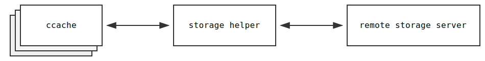

Storage helpers
 storage helper <-> remote storage server" />To communicate with remote storage servers in an efficient way, ccache spawns a long-lived local helper process that can keep connections alive, thus amortizing the session setup cost. The helper process is shared by all ccache processes that use the same remote storage settings.
NOTE: Support for storage helpers will be available in ccache version 4.13+: PR #1672.
Available storage helpers
| Protocol(s) | Project | Notes |
|---|---|---|
http, https |
ccache/ccache-storage-http-cpp | Reference implementation (C++) |
http, https |
ccache/ccache-storage-http-go | Reference implementation (Go), prebuilt binaries available |
Have you implemented a storage helper and want it to be listed above? Great! Open an issue, or maybe even create a pull request yourself for the web site repository.
Basic usage
-
Install a helper for the protocol you want (e.g.
http) in a location where ccache looks for helper programs. Ccache will start the helper automatically when needed. -
Set
CCACHE_REMOTE_STORAGE(orremote_storagein ccache's configuration file) to the URL of the remote storage server, e.g.http://example.com/cache.
Documentation
Starting a helper explicitly
A storage helper is usually started automatically by ccache when needed. However, it is possible to start the helper explicitly, for instance when developing or debugging a storage helper, or in custom deployment scenarios where the helper service is managed externally. Example:
export CRSH_IPC_ENDPOINT=/tmp/ccache-example.sock # On Linux/POSIX export CRSH_IPC_ENDPOINT=ccache-example-pipe # On Windows export CRSH_URL=http://example.com/cache ccache-storage-http
Ccache can then be told to connect to the IPC endpoint using the CRSH backend:
export CCACHE_REMOTE_STORAGE=crsh:/tmp/ccache-example.sock # On Linux/POSIX export CCACHE_REMOTE_STORAGE=crsh:ccache-example-pipe # On Windows